13 Clustering
“Some days are diamonds. Some days are stones. Sometimes you have a couple of stones in a row.” - Gordon Hayward
Clustering is a foundational technique in unsupervised machine learning, designed to uncover structure in datasets where no predefined labels or outcomes exist.
In contrast to supervised learning methods—where the goal is to predict a known response variable—clustering seeks to identify patterns or groupings in the data based solely on the similarity between observations. This makes it especially valuable in exploratory data analysis, where we are often interested in discovering hidden subgroups or natural partitions within a dataset.
The fundamental idea behind clustering is to group observations in such a way that those within the same cluster are more similar to each other than to those in different clusters. This similarity is typically measured using some form of distance or dissimilarity metric, with Euclidean distance being the most commonly used in practice.
In sports analytics, clustering can help identify different types of athletes, team strategies, or performance profiles without needing to label or classify the data in advance. For example, we might group NBA players based on their average points, assists, and rebounds per game to identify clusters such as high-volume scorers, versatile playmakers, or defensive specialists.
One of the most widely used clustering methods is K-means clustering, which begins by selecting a predetermined number of clusters, denoted by k.
The algorithm assigns each observation to the nearest cluster center and then updates the cluster centers based on the current assignments. This process continues iteratively until the cluster assignments stabilize, typically by minimizing a measure called the within-cluster sum of squares (WCSS).
K-means is relatively fast and works well when clusters are roughly spherical and of similar size, but it does require the analyst to specify the number of clusters in advance.
Another important approach is hierarchical clustering, which does not require the number of clusters to be specified up front. Instead, it builds a hierarchy or tree of clusters—called a dendrogram—by either successively merging smaller clusters into larger ones (agglomerative) or splitting a large cluster into smaller ones (divisive). This method is particularly useful for understanding the nested structure of the data and for visualizing how clusters are related to one another at various levels of similarity.
In sports settings, hierarchical clustering can be used to explore how players or teams group together at different levels of granularity, which can help coaches, analysts, or general managers make more informed decisions.
Before applying any clustering technique, it is often essential to preprocess the data by standardizing the variables. This is especially true when the variables are on different scales—for instance, points per game might range from 0 to 30, while blocks per game rarely exceed 3. Without standardization, variables with larger magnitudes can disproportionately influence the clustering results, potentially leading to misleading groupings.
Clustering is not just a mechanical process of dividing data into groups. Its real power lies in the interpretation and context-specific meaning of the clusters. In sports analytics, once clusters are formed, analysts must interpret what each group represents. Are they reflecting different player roles, team strategies, or developmental stages? The meaning of a cluster depends entirely on the variables used and the context in which the data is collected. This interpretive step is crucial for turning the output of a clustering algorithm into actionable insight.
In the sections that follow, we will apply clustering techniques to sports datasets and demonstrate how they can be used to uncover playing styles and performance archetypes. We will begin with K-means clustering applied to NBA player statistics and then explore hierarchical clustering as an alternative method. Along the way, we will discuss how to evaluate the quality of clusters and how to visualize them for deeper understanding.
13.1 NBA Player Styles
To demonstrate the power of clustering in a sports context, we begin with a case study using player statistics from the NBA. Our goal is to group players based on their in-game performance during a single season, allowing us to identify archetypes such as volume scorers, defensive anchors, or well-rounded contributors. By clustering players based on key statistical measures, we can uncover patterns that may not be obvious from traditional per-game summaries.
In this case study, we use the hoopR package in R, which provides access to rich and detailed NBA player box score data via the ESPN API. Specifically, we’ll use data from the 2021–2022 season, focusing on player-level averages across several core performance metrics.
We begin by loading the necessary libraries and retrieving the data. The tidymodels ecosystem helps us structure our data processing and modeling workflow, while hoopR provides the raw game-level data.
The load_nba_player_box() function fetches player box score data for the season. We then clean and summarize the data to compute per-game averages for each player. These averages form the basis of our clustering analysis.
library(janitor)
# Get NBA player box scores for the 2021–2022 season
nba_data <- load_nba_player_box(season = 2022)The raw box score data includes one row per player per game. Since we are interested in clustering based on overall performance style rather than single-game variation, we aggregate the data to the player level. We compute average points (PTS), assists (AST), rebounds (REB), steals (STL), blocks (BLK), turnovers (TOV), three-pointers made (FG3M), field goal attempts (FGA), and free throw attempts (FTA), and restrict our analysis to players who appeared in at least 30 games during the season to ensure we are analyzing a stable sample.
player_stats <- nba_data |>
group_by(athlete_display_name, team_abbreviation) |>
summarise(
games = n(),
pts = mean(points, na.rm = TRUE),
ast = mean(assists, na.rm = TRUE),
reb = mean(rebounds, na.rm = TRUE),
stl = mean(steals, na.rm = TRUE),
blk = mean(blocks, na.rm = TRUE),
tov = mean(turnovers, na.rm = TRUE),
fg3m = mean(three_point_field_goals_made, na.rm = TRUE),
ftm = mean(free_throws_made, na.rm = TRUE),
position = collapse::fmode(athlete_position_abbreviation),
.groups = "drop"
) |>
filter(games >= 30)Before performing clustering, we standardize the numeric features. This is a crucial step because the variables we are using are on different scales. For instance, points per game typically ranges from single digits to the low 30s, while steals or blocks per game rarely exceed 2 or 3. Without scaling, clustering algorithms like K-means will be unduly influenced by the variables with larger numeric ranges.
# Scale the numeric columns
scaled_stats <- recipe(~., data = player_stats) |>
step_rm(athlete_display_name, team_abbreviation, position) |>
step_normalize(all_numeric_predictors()) |>
prep()
dat = scaled_stats |> bake(new_data=NULL)The goal of this clustering exercise is not just to segment players for the sake of grouping, but to discover meaningful player types. For example, we may find a cluster of players who attempt many field goals and score efficiently, representing primary scorers. Another group may consist of players with high assist and rebound numbers, pointing to versatile point-forwards or playmakers. Defensive specialists may emerge as a group with high block and steal rates but low scoring output.
13.2 K-means Clustering
Now that we have prepared our NBA player statistics data, the next step is to apply K-means clustering, one of the most widely used and intuitive clustering algorithms. K-means aims to partition the observations into a fixed number of groups, or clusters, such that each observation belongs to the cluster with the nearest centroid—the mean position of all points within that cluster.
13.2.1 How K-means Works
K-means clustering is an iterative algorithm that seeks to minimize the total within-cluster sum of squares (WCSS), which measures the variance of the observations around the cluster centroids. Here’s how the algorithm works conceptually:
- Choose the number of clusters, \(k\), to create.
- Randomly assign initial positions for the \(k\) centroids.
- Assign each observation to the cluster whose centroid is closest, based on Euclidean distance.
- Recompute the centroids as the mean of the observations in each cluster.
- Repeat steps 3 and 4 until the assignments stop changing or a maximum number of iterations is reached.
The algorithm always converges, but it may converge to a local minimum depending on the starting positions. Therefore, it is common practice to run the algorithm multiple times with different random starts and retain the best result.
13.2.2 Example with two features
Suppose we only looked at a sample of 30 players with the features reb and ast.
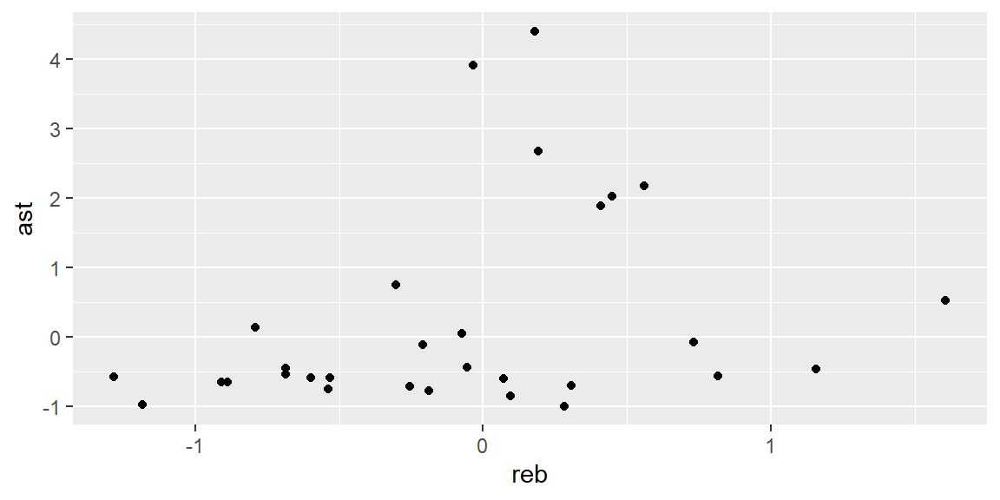
We can see what appears to be three grouping of players:
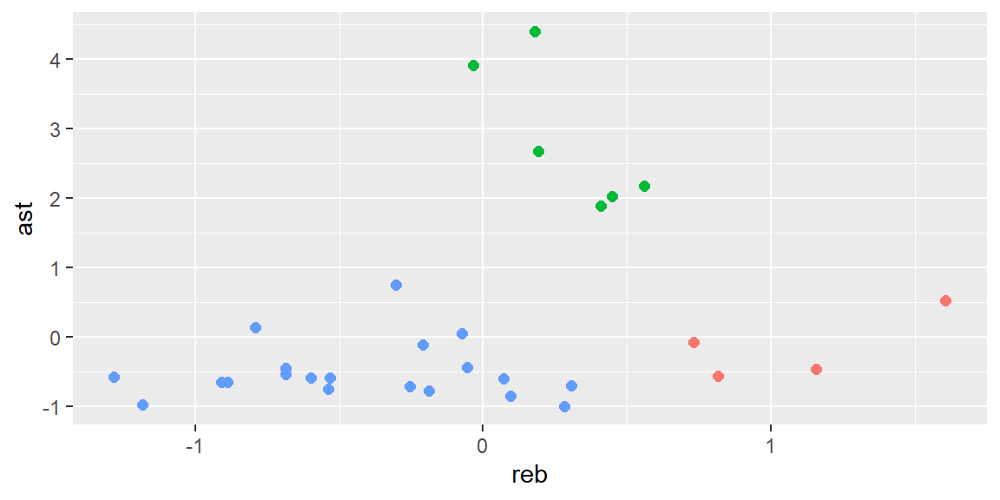
How do we get an unsupervised method to determine these clusters instead of us visually determining them?
We can start by specifying that there will be three cluster and putting three points at random on the plot. We will call these points the centroids. They are the orange points in the plot below.
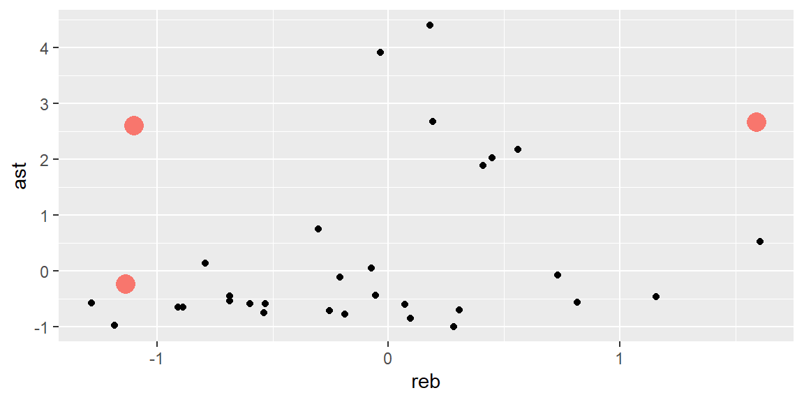
We now find the distance from each ppoint to the closest centroid.

We now cluster those points that share a centroid (same color in the plot below) and then update the centroids by calculating the middle of the points in the cluster.
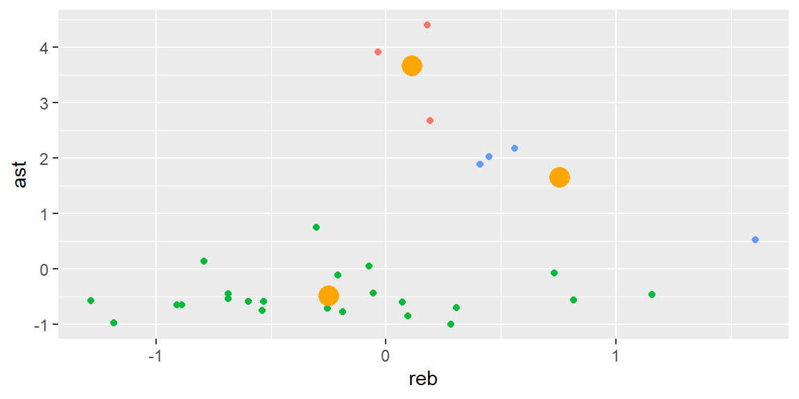
We now repeat the process. That is, we determine which centroid is closest to each point.
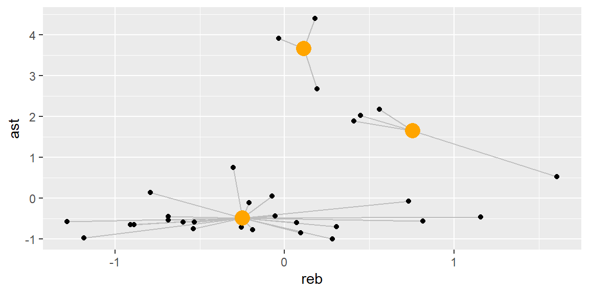
Next, color code the points based on the closest centroid and recalculate the position of the centroid.
This process continues until the centroids no longer moves.
With more than two features, the idea is still the same: calculate the distance to each centroid and make clusters based on those that are closest. Then we update the centroids and repeat the process. The difference with higher number of features is that we can no longer visualize the process as we have just done here.
13.3 Choosing the Number of Clusters
One of the most important decisions in K-means clustering is selecting an appropriate value for \(k\), the number of clusters. Too few clusters can lead to overly broad groupings that obscure important differences, while too many clusters may produce noise or overfit to small nuances in the data.
A commonly used heuristic is the Elbow Method, which plots the total WCSS for different values of \(k\). The idea is to choose the number of clusters at which the rate of decrease in WCSS sharply slows down—resembling an “elbow” in the plot. This point represents a good trade-off between reducing within-cluster variance and avoiding overly complex models.
A handy plot for doing this is the fviz_nbclust plot in the factoextra package. Below, we examine the plot for all the players but with just the features reb and ast.
library(factoextra)
fviz_nbclust(dat |> select(reb, ast) , kmeans, method = "wss")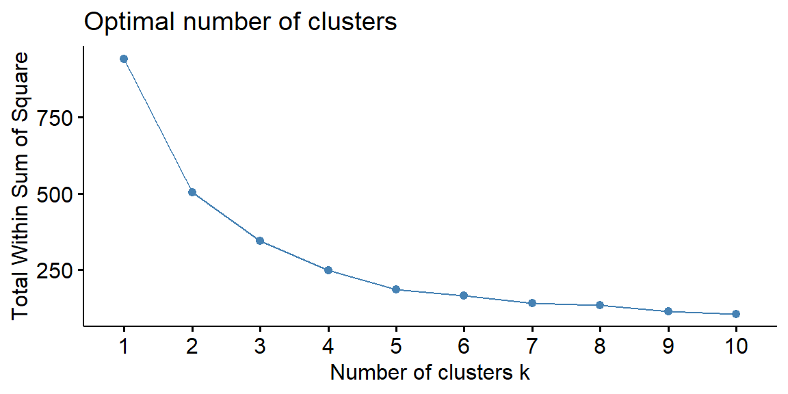
Here we see the decrees in WCSS starts to level off at \(k=5\). This suggests that a five-cluster solution captures most of the structure in the data without unnecessary complexity.
13.4 Applying K-means to NBA Player Data
Let’s first determine the number of clusters we should use when using all 9 features.
fviz_nbclust(dat, kmeans, method = "wss", k.max = 20)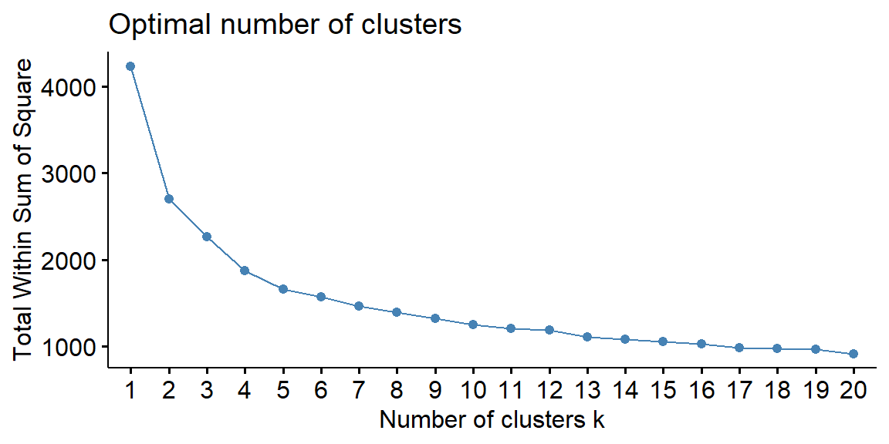
In this situation, we see the number of knots is not easily chosen by the elbow method. The decrease in WCSS is consistent, for the most part, throughout the values of k.
Since there are traditionally five positions on a basketball team, let’s go with \(k=5\).
Once we have selected the number of clusters, we fit the K-means model using the kmeans() function in base R. We use the nstart = 25 argument to perform the clustering 25 times with different initial centroids and keep the best solution based on the total WCSS.
kmeans_fit <- kmeans(dat, centers = 5, nstart = 25)The kmeans_fit object contains several components, including the cluster assignments for each observation, the coordinates of the centroids, and the total within-cluster sum of squares. We add the cluster assignments to our original player-level dataset for further analysis.
13.5 Interpreting the Clusters
The most meaningful part of a clustering analysis is the interpretation of the resulting groups. To do this, we examine the average values of the original variables within each cluster. This helps us understand what defines each group.
# A tibble: 5 × 9
cluster pts ast reb stl blk tov fg3m ftm
<fct> <dbl> <dbl> <dbl> <dbl> <dbl> <dbl> <dbl> <dbl>
1 1 13.1 2.78 3.82 0.893 0.361 1.40 1.91 1.81
2 2 22.2 6.28 6.39 1.21 0.516 3.03 2.10 4.32
3 3 4.36 0.930 2.41 0.350 0.247 0.568 0.544 0.573
4 4 11.9 1.87 8.03 0.758 1.20 1.42 0.537 1.96
5 5 6.05 1.27 2.95 0.535 0.310 0.704 0.705 0.836This summary can be used to determine similar players in each cluster. Let’s look at the distribution of positions for the second cluster which has the highest aveage points and assists.
position
C F PF PG SF SG
3 1 5 19 7 13 Most of these players in cluster 2 are guards. Let’s look at the players in this cluster.
13.6 Visualizing the Results
To help interpret the clusters visually, we can use the fviz_cluster() function, which projects the high-dimensional data onto two principal components and shows the cluster memberships in two dimensions.
fviz_cluster(list(data = dat, cluster = kmeans_fit$cluster))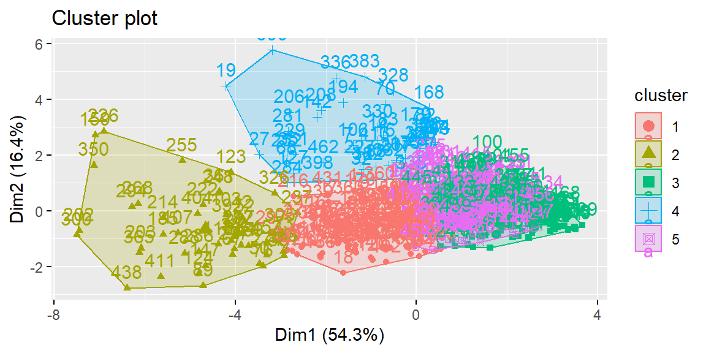
While this visualization simplifies the data into two dimensions, it still provides a helpful overview of how well the clusters are separated and whether there is any substantial overlap between groups. Large, well-separated clusters suggest that the statistical profiles of the players are meaningfully different.
13.7 Hierarchical Clustering
While K-means clustering is powerful and widely used, it requires the analyst to choose the number of clusters in advance and is most effective when clusters are roughly spherical and of similar size. An alternative technique that overcomes some of these limitations is hierarchical clustering, which builds a tree-like structure of nested clusters. This method provides a flexible and informative view of the relationships among observations and is particularly helpful when we want to explore the data at multiple levels of granularity.
13.7.1 The Basic Idea
Hierarchical clustering operates by computing a measure of dissimilarity (or distance) between each pair of observations, then successively merging (or, in some cases, splitting) observations and clusters based on that measure. The result is a dendrogram—a tree diagram that illustrates how observations group together.
There are two primary types of hierarchical clustering:
- Agglomerative clustering, which begins with each observation in its own cluster and repeatedly merges the two closest clusters.
- Divisive clustering, which starts with all observations in a single cluster and successively splits them.
In practice, agglomerative clustering is far more common and is the default approach in most statistical software.
13.7.2 Distance Metrics and Linkage Methods
Hierarchical clustering requires two key decisions: how to measure the distance between observations, and how to define the distance between clusters.
The most common distance metric is Euclidean distance, which measures the straight-line distance between two points in multidimensional space. Other options include Manhattan distance and cosine similarity, though Euclidean is usually sufficient for standardized numerical data.
Once distances between individual observations are calculated, we must decide how to compute the distance between clusters. This is known as the linkage method, and several options are available:
- Single linkage: the shortest distance between any two points in the two clusters.
- Complete linkage: the greatest distance between any two points.
- Average linkage: the average of all pairwise distances.
- Ward’s method: minimizes the total within-cluster variance and tends to produce compact, spherical clusters (similar in spirit to K-means).
For our analysis of NBA player statistics, we will use Ward’s method, which is generally well-suited for quantitative data and tends to create clusters of similar size.
13.7.3 Applying Hierarchical Clustering to NBA Player Data
We begin by computing the distance matrix and fitting the hierarchical clustering model.
The hclust() function returns an object containing the hierarchy of merges, which we can visualize using a dendrogram.
fviz_dend(hc, k = 5, rect = TRUE, labels_track_height = 3)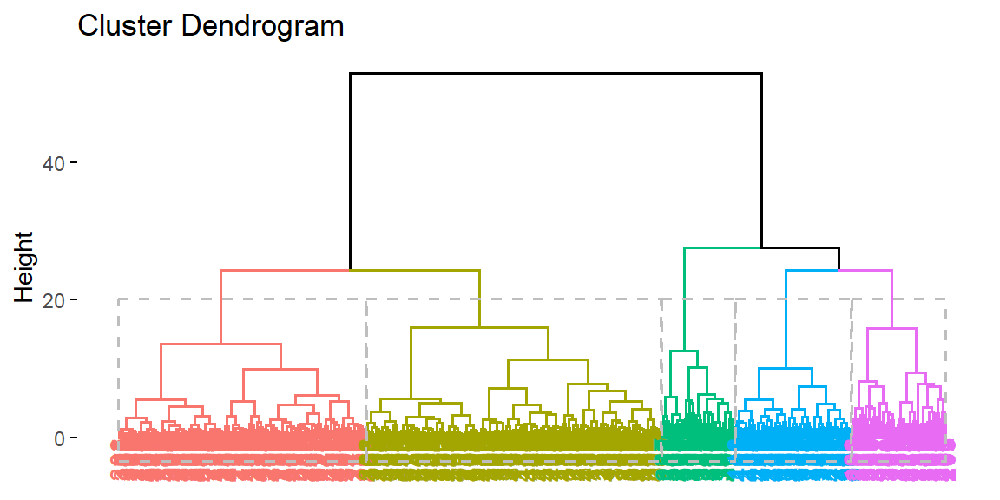
In the dendrogram, each leaf node represents an individual player. As we move up the tree, branches merge into larger clusters based on their similarity. The height at which two clusters are merged corresponds to the dissimilarity between them.
We can use this tree to cut the data into any number of clusters by drawing a horizontal line across the dendrogram. For example, if we cut the tree at \(k = 5\), we obtain four clusters similar to our K-means example.
13.7.4 Interpreting and Comparing Results
Once we have assigned players to clusters using hierarchical clustering, we can interpret the groups in the same way as we did with K-means. For example, we might summarize the mean statistics for each cluster:
# A tibble: 5 × 9
hc_cluster pts ast reb stl blk tov fg3m ftm
<fct> <dbl> <dbl> <dbl> <dbl> <dbl> <dbl> <dbl> <dbl>
1 1 7.06 1.46 3.14 0.583 0.336 0.792 0.878 0.957
2 2 4.96 1.03 2.63 0.388 0.278 0.619 0.572 0.671
3 3 13.1 2.10 8.55 0.804 1.21 1.58 0.644 2.23
4 4 14.5 2.84 3.99 0.876 0.341 1.47 2.12 2.06
5 5 20.3 6.10 5.81 1.26 0.518 2.86 2.04 3.82 This output allows us to describe the average player profile for each cluster. It’s important to note that while hierarchical clustering and K-means may yield similar types of player groupings, they do not always agree. For example, hierarchical clustering may detect smaller subgroups or more gradual transitions between player types, since it is not constrained to fixed-size or spherical clusters.
We can also compare the cluster assignments from K-means and hierarchical clustering directly:
table(KMeans = player_stats$cluster, Hierarchical = player_stats$hc_cluster) Hierarchical
KMeans 1 2 3 4 5
1 31 4 1 65 10
2 0 0 4 1 43
3 4 120 0 0 0
4 6 5 37 0 1
5 127 12 0 0 0This contingency table shows how much overlap exists between the two methods. A high degree of agreement suggests that the player groupings are robust and meaningful, while major differences may indicate that the choice of clustering method influences the interpretation.
13.7.5 Advantages and Limitations
One key advantage of hierarchical clustering is that it provides a complete picture of how observations relate to one another at all levels of similarity. This is particularly useful in exploratory settings where the number of natural groupings is unclear. It also does not require the analyst to pre-specify the number of clusters, unlike K-means.
However, hierarchical clustering has some limitations. It can be computationally expensive for large datasets, since it must compute and store the entire distance matrix. Additionally, once a merge is made, it cannot be undone, meaning that early decisions in the hierarchy can influence the final outcome even if better options become available later. As a result, hierarchical clustering is best suited for medium-sized datasets where interpretability is a primary concern.
13.8 Comparing K-means and Hierarchical Clustering
Clustering is often an exploratory process, and choosing the “best” algorithm depends on both the structure of the data and the goals of the analysis. In this section, we compare the results of K-means and hierarchical clustering applied to our NBA player statistics dataset. Our goal is not only to assess which algorithm performs better, but also to explore how the insights generated by each method can differ in practical and strategic ways.
13.8.1 Conceptual Differences
Before comparing the results quantitatively, it’s useful to revisit the conceptual differences between the two approaches.
K-means is a partitioning method. It assumes that the data are divisible into a fixed number of clusters and tries to optimize the grouping by minimizing the total within-cluster variance. The clusters produced by K-means tend to be compact and evenly sized, which works well when the true groups are spherical and well-separated. However, the algorithm requires us to specify the number of clusters in advance and is sensitive to the initial placement of centroids.
In contrast, hierarchical clustering is a connectivity-based method. It does not require a predetermined number of clusters and instead builds a full hierarchy that shows relationships among observations at all levels of similarity. It can reveal nested or irregular groupings, and its results are typically presented as a dendrogram. This method offers more interpretive flexibility but can be computationally intensive and less effective when the dataset contains many noise points or overlapping clusters.
13.8.2 Comparing Cluster Assignments
To see how the two methods compare on our NBA player dataset, we can tabulate the cluster assignments for each player. Recall that we created a cluster variable from K-means and a hc_cluster variable from hierarchical clustering.
table(KMeans = player_stats$cluster, Hierarchical = player_stats$hc_cluster) Hierarchical
KMeans 1 2 3 4 5
1 31 4 1 65 10
2 0 0 4 1 43
3 4 120 0 0 0
4 6 5 37 0 1
5 127 12 0 0 0This cross-tabulation shows how many players were assigned to each pair of K-means and hierarchical clusters. Large values along the diagonal suggest strong agreement between the methods, while high off-diagonal values indicate differences. For example, if most players in K-means Cluster 1 are also in hierarchical Cluster 3, we might consider these to represent similar player types despite the differing algorithmic foundations.
You may find that some clusters align fairly well, particularly those representing extreme player types—such as high-scoring, high-usage stars or low-usage defensive specialists. On the other hand, more nuanced or hybrid players may be assigned to different clusters by each method depending on how the algorithm interprets the multidimensional space.
13.8.3 Visual Comparison
Visualizing the clusters produced by each method is another effective way to compare results. We can again use the fviz_cluster() function to project the data into two dimensions using principal component analysis and color-code the observations by their cluster membership.
fviz_cluster(list(data = dat, cluster = kmeans_fit$cluster)) +
ggtitle("K-means Clustering of NBA Players")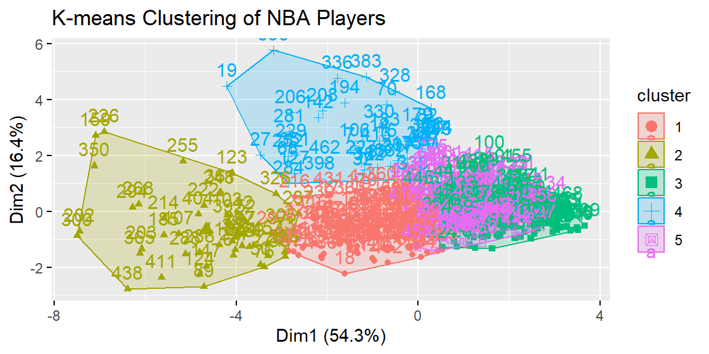
fviz_dend(hc, k = 5, rect = TRUE, labels_track_height = 3) +
ggtitle("Hierarchical Clustering Dendrogram")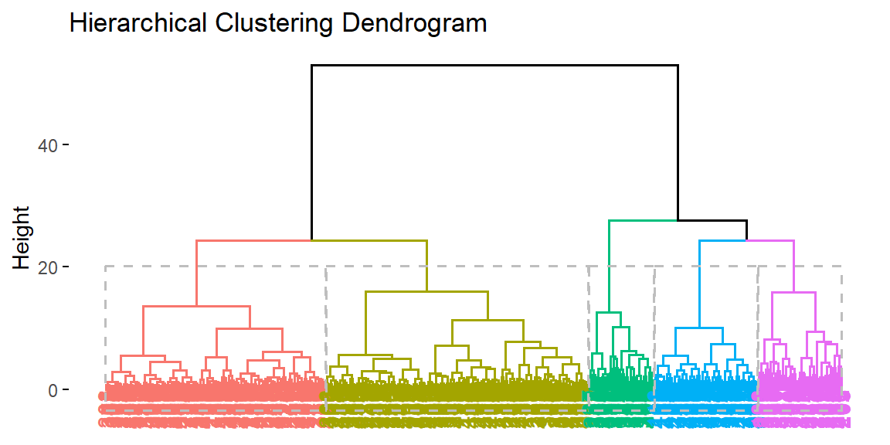
These visualizations provide complementary views of the data. The K-means plot shows distinct, compact groups, while the dendrogram reveals the hierarchical structure—allowing us to see not only how players group together but also how those groups relate to one another.
13.8.4 Statistical Comparison
Although clustering is fundamentally an unsupervised technique, there are ways to assess and compare the quality of different clustering results. One popular metric is the Silhouette score, which measures how well each observation fits within its assigned cluster compared to other clusters.
We can compute the average silhouette width for both methods:
# Silhouette score for K-means
sil_kmeans <- cluster::silhouette(kmeans_fit$cluster, dist_matrix)
mean(sil_kmeans[, "sil_width"])[1] 0.2197183# Silhouette score for hierarchical clustering
sil_hc <- cluster::silhouette(cluster_assignments, dist_matrix)
mean(sil_hc[, "sil_width"])[1] 0.1827008Higher average silhouette scores indicate better-defined clusters. While this metric should not be the sole basis for choosing a method, it can provide a helpful indication of how well the structure discovered by each algorithm matches the natural groupings in the data.